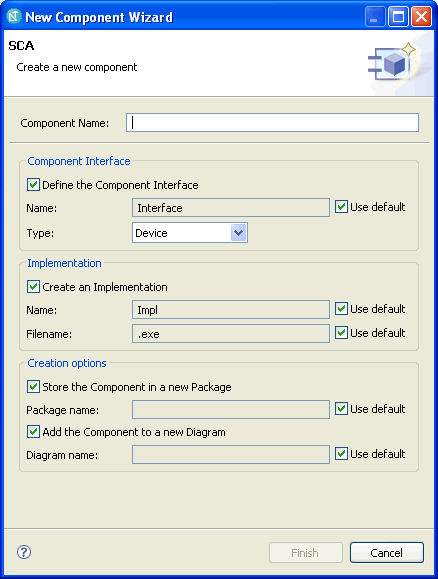

A component represents a software module (source code, binary code, executable, library, etc.) with a well-defined interface. The interface of a component is represented by its ports and supports interfaces. Component implementations show compiler and run-time dependencies and represent a binary for a particular build environment.
Use the Component Wizard to create components.

To create a component, do the following:
All other fields in the wizard are optional but enabled.
The wizard will create a corresponding Package, Component Interface, Component Structure Realization, Implementation with Executable File Name, and Diagram with the appropriate relationships for the component. Using the Type drop-down list you can create the following: Resource, Resource Factory, Device, LoadableDevice, ExecutableDevice, AggregateDevice, Device Manager, and Domain Manager. To create a component without a supported interface, select None from the Type drop-down list. If you create an AggregateDevice, the provides port is automatically created and added to the diagram.
By default a suffix is appended to the component name for each element you create with the wizard. To disable this, deselect Use default. To edit the default values, select Windows > Preferences > Zeligsoft > SCA.
When you create a Component, the appropriate worker functions are added to the component structure realization. The worker function visibility is set to private. The component implementation Executable File Name is displayed when you select the code attribute in the Properties View for the Implementation.
A component implementation link between the component implementation and the component structure realization is automatically created. A generalization is created between the component structure realization and the component interface.
The SCA requires that an Assembly Controller be identified. Any SCA compliant component instance can be the assembly controller. To create an assembly controller, do the following:
You can edit the component worker operations: right-click the worker operation and select Open Editor.
To edit the configure_body and query_body attributes, do the following: